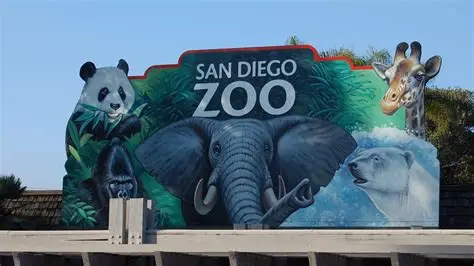
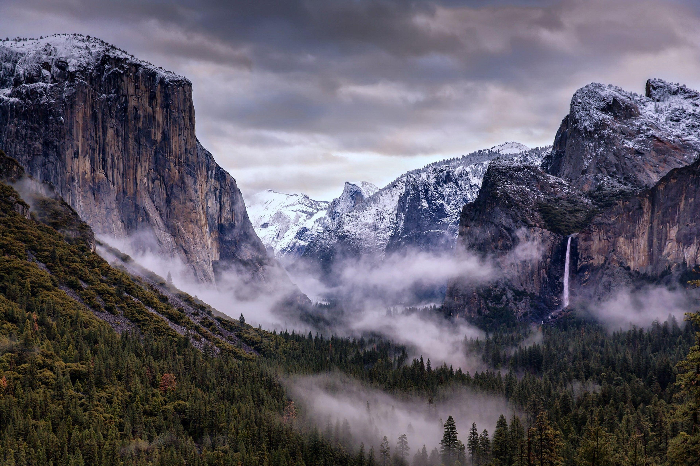
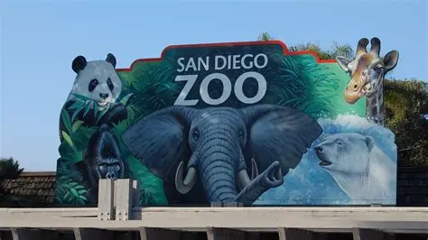
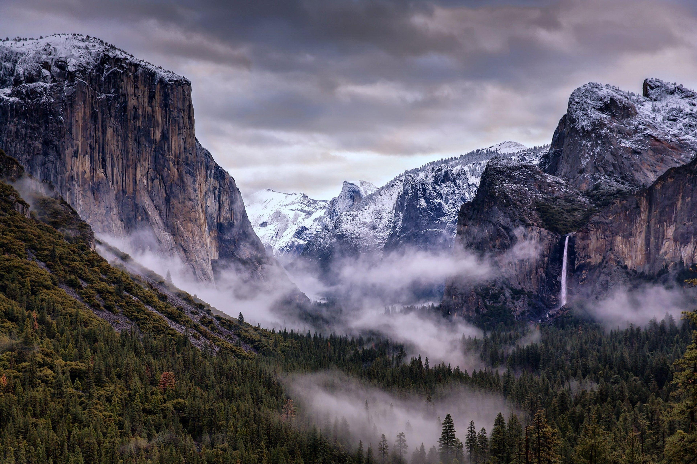
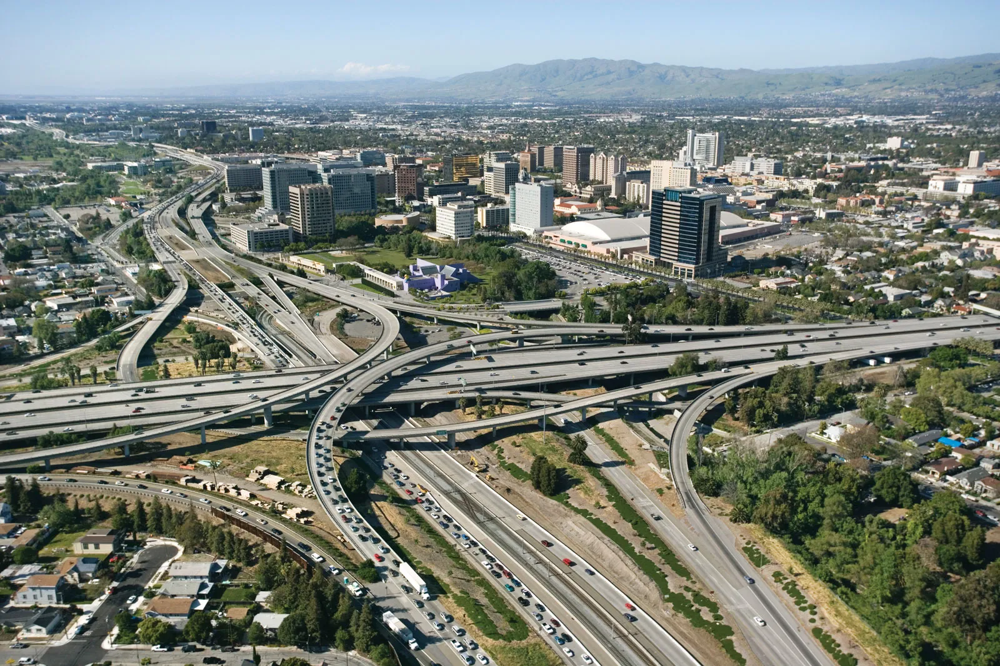
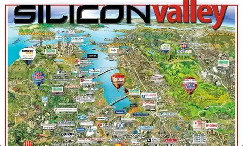
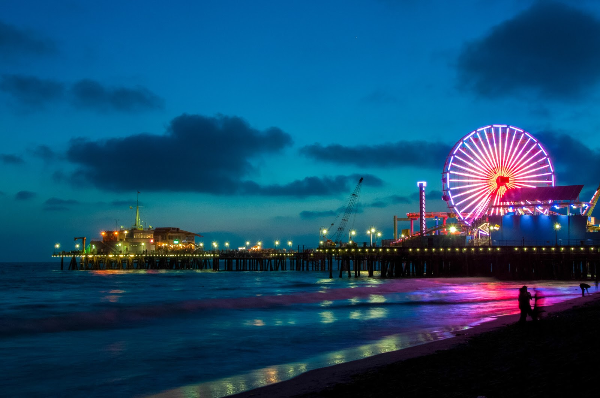
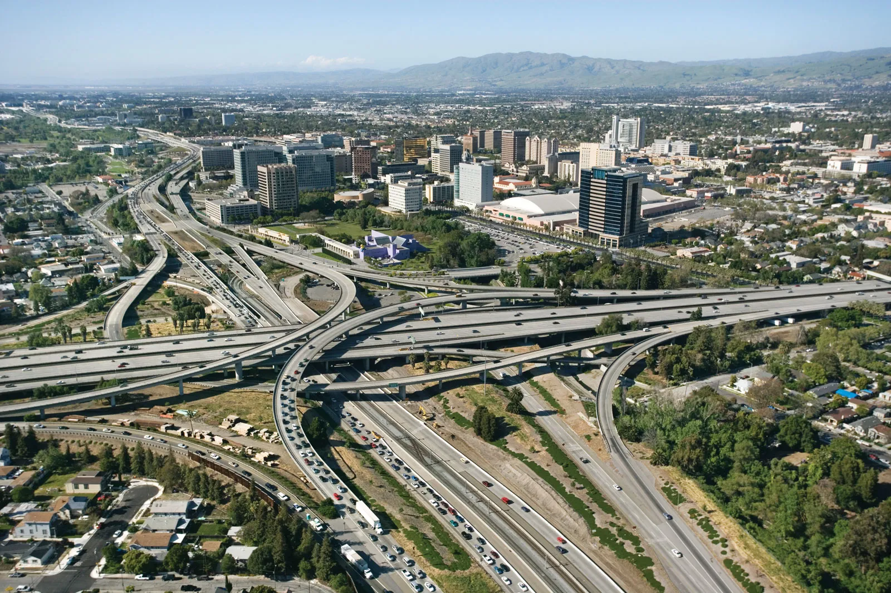
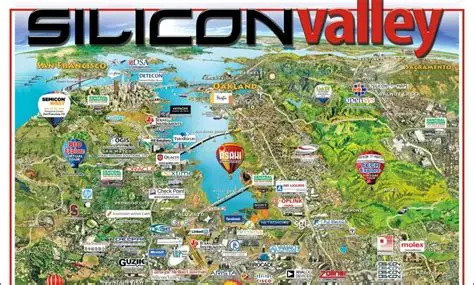
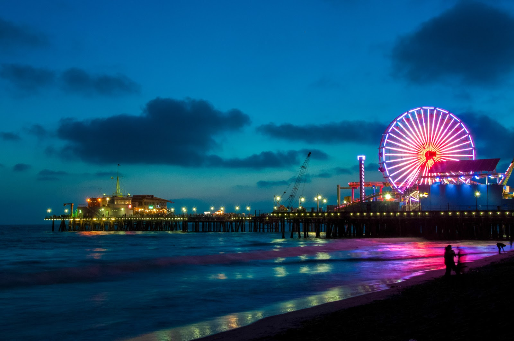

The many attractions of the Golden State
This particular page contains various about attractions or locations that can be visited. Both solo and in a group.
Disneyland
Starting off with one of the most popular and famous attractions the state has to offer: Disneyland. Located in Anaheim, this is going to cover both Disneyland and Disney California Adventure Park. Both parks are located in Anaheim, Southern California. The parks are located right next to each other and can be accessed through the same entrance area.
Disneyland is something that all kids have dreamt of visiting. Myself included, and yes it might be because I as a kid adored characters like Mickey, Elsa and Buzz Lightyear. Even as I've become older I still want to visit the place. Of course there are certain locations I want to visit more than others, but that's not important in this context.
Whether you're a kid wanting to visit Toontown for Mickey and Co or Pixar Pier for all things Pixar, they have that covered. Or if you're like me, an adult and a child at the same time then you have a lot to do. Visit Cars land for everyone's favorite race car, head to Avengers Plaza for some superhero fun (this can also be found in Big Hero 6's location San Franokyo), or head over to Galaxys edge and take the Millenium Falcon through the Kessler run in less than 12 Parsecs.
Yeah, Disneyland has a lot of cool attractions that everyone can enjoy. Even a child not knowing what Star Wars is will love creating their own Lightsaber and or Astromech.
San Diego Zoo
The San Diego Zoo is one of the most famous zoos in the world. Located in Balboa Park, San Diego, the zoo is home to over 3,500 animals representing more than 650 species and subspecies. The zoo is known for its large and diverse collection of animals, as well as its innovative and naturalistic exhibits.
One of the most popular exhibits at the San Diego Zoo is the Giant Panda Research Station, which is home to several giant pandas. The zoo has been involved in panda conservation efforts for many years and has successfully bred several pandas in captivity.
In addition to the giant pandas, the San Diego Zoo is also home to a wide variety of other animals, including elephants, lions, tigers, gorillas, and many more. The zoo's exhibits are designed to mimic the animals' natural habitats as closely as possible, providing visitors with an immersive and educational experience.
The San Diego Zoo also offers a variety of educational programs and events for visitors of all ages, including animal encounters, behind-the-scenes tours, and conservation talks. The zoo is committed to conservation and sustainability efforts and works to protect endangered species both locally and globally.
Yosemite National Park
The Yosemite National Park is one of the most famous parks in the US. Its large area, beautiful wilderness, mountains and authentic feel make is stand out among other parks.
Alot of the parks geology is characterized by the massive granite mountains and remnants of older rock. Around 10 million years ago the mountain range Sierra Nevada was lifted up and tilted to form its uniqe terrain. Due to this tilt, rivers and waterfalls flowing through became much steeper which eventually formed deep canyons and became what we know as the Yosemite Valley.
Yosemite is also home to alot of wildlife. From black bears, bobcats and mountain lions, deer, foxes and coyotes. The park is also home to over 200 species of birds including the Steller's jay, northern flicker and the peregrine falcon. The Park also contains around 20% of Californias plant life with there being around 1400 diffirent plant species there. Around 160 of them are concidered rare which reside in rare formations and or soil which characterizes the limited places they can grow.
Like everyother park in the world there are destined to be some fires, but not all are as damaging as others. In the early 1860's the indigenous residents used to set small controlled fires to due to their farming practises. Those fires are compared to the intentional fires set by the US Park Services. The indigenous also used the fires as a sort of wildlife management to keep certain pieces of land clear for other needs. This meant more food for the larger animals and less risk for a large scale fire. In 2018 the park partially shut down due to the Ferguson Fires to the west. The largest shut down in 30 years.
Comic Con
Comic Con is a massive convention that takes place every year in San Diego, California. The event is a celebration of all things pop culture, including comic books, movies, TV shows, video games, and more. Comic Con is one of the largest and most popular conventions of its kind in the world, attracting thousands of fans from around the globe.
Comic Con is one of my personal favorite events of the whole year. Not only does it feature 100's of other comic fans, but its also during these events that we get announcements and hopefully trailers from upcoming comic book movies from studios like DC and Marvel.
Even though it might not seem like it is for everyone, it 100% is. If your more interested in panels than actual comics they have a full program for that. You can walk around and explore the various booths, meet artists, and even get some exclusive merchandise.
This specific section is dedicated to the most popular version of comic con being the SDCC or San Diego Comic-Con, but there are also other diffirent versions including the New York Comic Con and Anime Expo which all featuer their own special events and diffirent crowds.
This may have been abit of a nerdy section, but its important to illustrate that there are multiple things to do in California. Even if not everything is to your liking its important to stay updated on things to do in a specific location.
Silicon Valley
This is probobly going to be the most "nerdy" section of the "attractions" page. Silicon Valley is known as the tech capital of the world, home to countless startups and tech giants like Google, Apple, and Facebook reside and have their headquarters. It's a place where innovation meets creativity, and where the future is being shaped.
There isnt much to say about Silicon Valley (visit our tech page to learn more), but it's worth noting that the area is not just about tech. There are also beautiful parks, great restaurants, and a vibrant culture to explore.
Not only does Silicon Valley give you an interesting look at how the tech industry works, but it also gives you limitless potential for a potential new startup, for the specially interested.
If your not interested in going to Silicon Valley, but still want to get a glimpse into how the valley opperates its worth checking out the show "Silicon Valley" which follows a struggiling tech startup that tries to reach the top of the tech industry while fighting large companies.
Santa Monica Pier
The Santa Monica Pier is a popular tourist destination located in Santa Monica, California. The pier features a variety of attractions, including an amusement park, an aquarium, and several restaurants and shops.
One of the main attractions at the Santa Monica Pier is Pacific Park, an amusement park that features a variety of rides and games for visitors of all ages. The park includes a Ferris wheel, roller coaster, and several other thrill rides, as well as carnival games and food stands.
In addition to the amusement park, the Santa Monica Pier is also home to the Santa Monica Pier Aquarium, which features a variety of marine life exhibits and interactive displays. The aquarium is operated by the Ocean Institute and offers educational programs and events for visitors of all ages.
The pier also features several restaurants and shops, including seafood restaurants, souvenir shops, and ice cream stands. Visitors can enjoy a meal or snack while taking in the beautiful views of the Pacific Ocean and the Santa Monica coastline.
 



 




